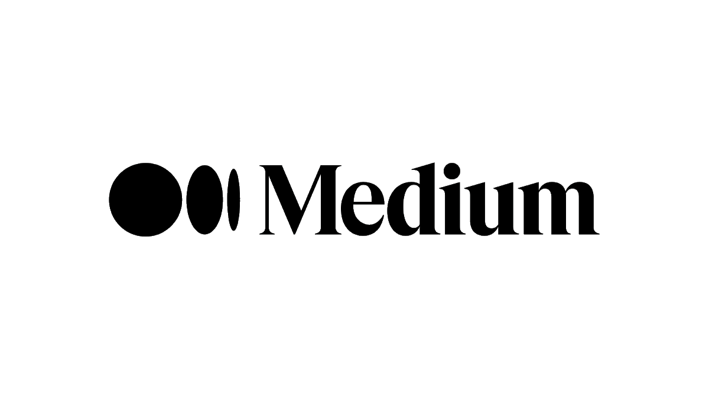

Ma Veille Technologique
Le Web 3.0
C'est quoi une veille technologique ?
La veille technologique ou veille scientifique et technique consiste à s'informer de façon systématique sur les techniques les plus récentes et surtout sur leur mise à disposition commerciale (ce qui constitue la différence entre la technique et la technologie). Cette activité met en œuvre des techniques d'acquisition, de stockage et d'analyse d'informations et leur distribution automatique aux différentes sections concernées de l'entreprise, à la manière d'une revue de presse. Ces informations peuvent concerner une matière première, un produit, un composant, un procédé, l'état de l'art et l'évolution de l'environnement, scientifique, technique, industriel ou commercial de l'entreprise. Elle permet aux bureaux d'études d'être informés des baisses possibles de coût ou d'augmentation de qualité dans le cadre de l'analyse de la valeur. L'entité de production connaît mieux grâce à elle ses limites de production et sa concurrence future. Elle se pratique dans la légalité et le respect de la déontologie.
C'est quoi les Outils de veille ?
Tout d'abord, Les outils de veille sont des technologies conçues pour surveiller et collecter des informations en ligne sur des sujets d'intérêt spécifiques. Ils permettent aux entreprises, aux organisations et aux individus de suivre les tendances, les nouveautés et les événements pertinents dans leur domaine d'activité. Les outils de veille peuvent être utilisés pour surveiller les médias sociaux, les blogs, les forums en ligne, les sites d'actualités et les bases de données pour identifier les informations qui sont pertinentes pour l'utilisateur. Les outils de veille peuvent aider à améliorer la prise de décision en fournissant des informations en temps réel sur les sujets d'actualité, les concurrents, les clients, les employés et plus encore. Il existe de nombreux outils de veille différents disponibles, chacun ayant ses propres fonctionnalités et avantages.
Les Outils de veille utilisés
Google Alerts ou Google Alertes est un service qui vous envoie un mail ou une alerte lorsqu'une nouvelle page web, correspondant aux mots-clés choisis, apparaît dans les résultats Google.
Medium est une plateforme web de blog créée en août 2012 par Evan Williams et Biz Stone, les fondateurs de Twitter et Blogger. Le site offre une interface de blogging minimaliste conçue pour des textes longs, regroupés par « collections », ainsi que des fonctions de découverte, partage et recommandation.
La blockchain au service du Web 3.0
Une nouvelle génération du Web est en train d’émerger. Décentralisée, reposant sur la technologie de la blockchain, elle reste très peu régulée. Certains y voient une révolution numérique, d’autres une utopie...
Publié le : 13 Décembre 2022
C'est quoi le Web 3.0 ?
l'avenir de Internet c'est un avenir décentralisé et c'est quelque chose que le la toile 3.0 a commencé à construire aujourd'hui. Le Web 3.0 est une technologie qui établit ses bases sur la blockchain et Réseaux P2P, qui nous promet une expérience complètement différente, mais surtout, totalement décentralisée et sécurisée...
Publié le : 3 Décembre 2022
L'histoire de l'évolution du Web
L'histoire du Web commence en 1989 avec le développement par Tim Berners-Lee, qui est considéré comme le père du World Wide Web. Ce Web 1.0 (parce que c'était son premier développement) était essentiellement un support statique qui permettait de présenter des informations aux utilisateurs qui accédaient aux services d'Internet à cette époque...
Publié le : 27 Novembre 2022